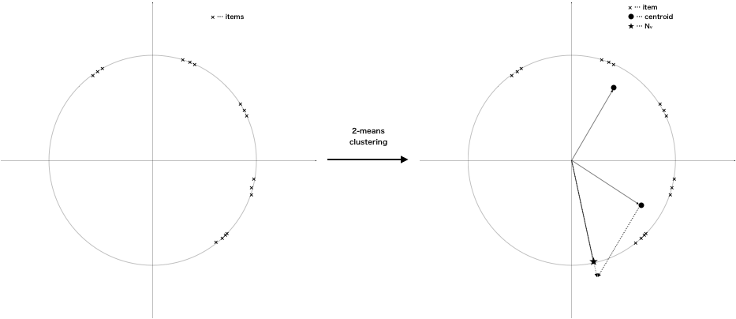
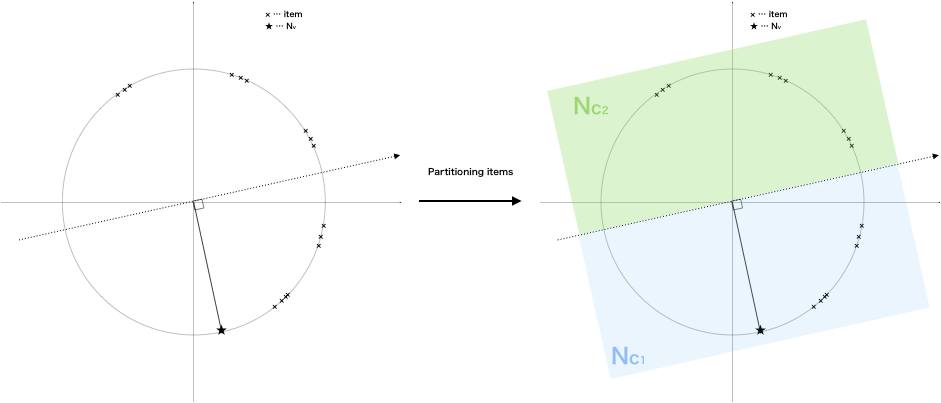
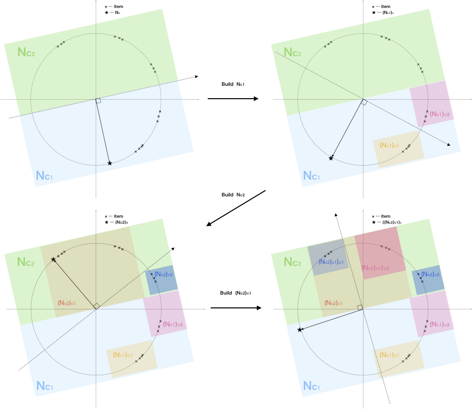
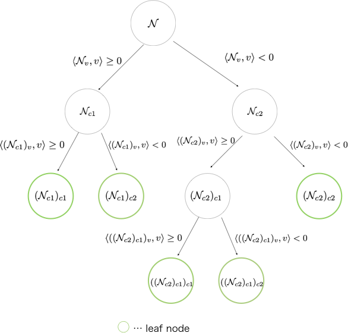

Approximate Nearest Neighbor search in Go
Introduction
The aim of this post is to explain the basic algorithm and parameters to be tuned in gann, a library for Approximate Nearest Neighbor(ANN) search purely written in go. Although I'm gonna make every effort to make this post as easy as possible, the readers are assumed to have basic knowledge of math. Note that the algorithm is almost similar to that of Annoy, a library for Approximate Nearest Neighbors in C++/Python optimized for memory usage and loading/saving to disk. I would like to take this opportunity to express my appreciation to Annoy developers 🙏.
As of writing this post, gann only supports cosine similarity search, so I focus on describing the ANN search algorithm for cosine similarity metrics implemented in gann.
In the subsequence sections, we use the following notations \begin{eqnarray*} d \ \ &:& \ \ \textrm {the dimension of feature vectors of items}& \\ I = \{v_1, \dots, v_N \} \subset \mathbb{R}^d &:& \ \ \textrm{items}& \\ q, v, w, x, y \subset \mathbb{R}^d \ \ &:& \ \ \textrm{arbitrary $d$-dimensional vector} \\ S^d = \{v \in \mathbb{R}^d \mid \|v\| =1 \} \ \ &:& \ \ d\textrm{-dimensional sphere} \\ < v, w >\ \ &:& \ \ \textrm{inner product between} \ v, w \end{eqnarray*} and we assume that the all of items(' vectors) are on $S^d$. This assumption is practically plausible because we usually have enough time to prepare search algorithms before execution.
Background - why approximate search
Why do we need approximate nearest neighbor search algorithms? The reason is that the computation of the exact nearest neighbor search is really expensive if $N >> 0$ and $d >> 0$.
In fact, its computational complexity is $O(Nd)$ since we have to calculate distances between a query vector $q$ and every item in $I$ (for $N$ times) and the complexity of each distance calculation is $O(d)$ for almost all major metrics like $L^2$ (Euclidean) metric
$$
\textrm{Eucledian}(x, y) := \sqrt{ (x_1 - y_1)^2 + (x_2 - y_2)^2 + \cdots + (x_d - y_d)^2}, \ \ \ x,y \in \mathbb{R}^d
$$
or cosine similarity metric
$$
\textrm{Cosine}(x, y) := \dfrac{\left< x,y \right>}{\|x\| \|y\|}, \ \ \ x,y \in \mathbb{R}^d.
$$
In the era of big data, situations where $N >> 0$ and $d >> 0$ are really common, but fortunately we often have practically optimal neighbors enough because $N >> 0$. That motivates us to develop approximate yet low-latency nearest neighbor search algorithms.
Building a BSP tree on $d$-sphere
Let us dive into the algorithm implemented in Annoy/gann. The goal of ANN search is to, given a query vector $q$, find a subset $I^\prime$ of $I$ consisting of items which are near (in sense of cosine similarity) enough to $q$. Since any $v_i$ is normalized, the similarity is calculated as $$ \textrm{Cosine}(q, v_i) \ \ = \ \ \dfrac{\left< q, v_i \right>}{\|q\| } \ \ = \ \ C \times \left< q, v_i \right> \ \ \propto \ \ \left< q, v_i \right> $$ where $C$ is a constant factor which is independent of $v_i$, the problem is now broken down into find items with larger inner product with $q$.
The core idea of the algorithm in Annoy/gann is partitioning $\mathbb{R}^d$ (which is equivalent to buildings a BSP tree[3] on $\mathbb{R}^d$) so that similar items are grouped together into a single partition.(a single leaf). Because of that, we can find optimal neighbors (neighbor partitions) by only calculating the distance between the partitions and a query vector, that is much more efficient than the case of exact search. Since we assumed that all the items are on $S^d$, it corresponds to building a tree on $S^d$. Let's get started with building a root node $\mathcal{N}$.
First we consider $I$ as $\mathcal{N}$'s items $\mathcal{N}_{items} := I$ and execute $2$-means clustering algorithm on $\mathcal{N}_{items}$, and let $c_1, c_2$ the resulted centroids. Note that, in the implementation, we sample a subset of items for $2$-means clustering in order to speed up building steps ( source). Then we define the $\mathcal{N}$'s vector $\mathcal{N}_v$ as $$ \mathcal{N}_v := \dfrac{c_1 - c_2}{\|c_1 - c_2 \|} $$

After that, we partition $\mathcal{N}_d$ into two child nodes $\mathcal{N}_{c_1}, \mathcal{N}_{c_2}$ as $$ v \textrm{ belongs to } \begin{cases} (\mathcal{N}_{c_1})_{items} \ \ \ \left< N_v, v \right> \geq 0 \\ (\mathcal{N}_{c_2})_{items} \ \ \ \ \textrm{o.w.} \end{cases} $$

Now we have finished building a root node $\mathcal{N}$ with items $N_{items} = I$, vector $N_v = \frac{c_1 - c_2}{\|c_1 - c_2 \|}$ and child nodes $\mathcal{N}_{c_1}, \mathcal{N}_{c_2}$ whose items are given by $$ (\mathcal{N}_{c_1})_{items} = \{ v \in N_{items} \mid \left < N_v, v \right> \geq 0 \}, \\ (\mathcal{N}_{c_2})_{items} = \{ v \in N_{items} \mid \left < N_v, v \right> < 0 \}. \\ $$ Then, we recursively build child nodes in the same way until the number of children's items is less than the threshold, such nodes are called as leaf. Note that the variable k in gann represents the threshold source .

In the above example, we set the threshold to be $5$. Therefore the building steps continue until its children become leaf nodes with the number of items less than $5$, and we have the corresponding BSP tree:

In gann, the struct type of nodes is given by ( source )
type Node struct {
ID string
Vec item.Vector
NDescendants int
Children []*Node
Leaf []int64
}
ID is a uuid, Vec corresponds to $\mathcal{N}_v$, NDescendants equals $\# (\mathcal{N})_{items}$, Children is the slice of child nodes, and Leaf equals the slice of ids of items in $(\mathcal{N})_{items}$. Note that both Children and Vec are nil if and only if $\mathcal{N}$ is leaf node if and only if Leaf is not nil in our implementation ( source ).
The Index = the set of nodes in a forest of BSP trees
In the previous section, I described how to build a BSP-tree on $d$-sphere. In gann, we need to build the struct called Index before executing ANN search. The definition of Index is given by ( source )
type Index struct {
dim int
nTree int
k int
items []item.Item
itemIDToItem map[int64]item.Item
nodes []*node.Node
nodeIDToNode map[string]*node.Node
roots []*node.Node
}
dim is the dimension of the items' vector, nTree represents the number of BSP-trees we use for ANN search, k is the threshold explained above, and the others are obvious from their name.
As the first step, we initialize Index by giving k, dim, items to Initialize fucntion in index package ( source )
// Initialize ... initialize Index strcut.
func Initialize(rawItems [][]float32, d int, nTree int, k int, ...) (*Index, error) {
...
}
*Index. Then we initialize nTrees root nodes ( source ), and build BSP-trees corresponding to the root nodes in parallel using multiple goroutines ( source ):
var wg sync.WaitGroup
var m sync.Map // used to collect all of nodes in the BSP-trees
for i := range idx.roots {
wg.Add(1)
ii := i
go func() {
// build a BSP-tree as in the previous section
idx.roots[ii].Build(idx.items, idx.k, idx.dim, &m)
wg.Done()
}()
}
wg.Wait()
nTrees BSP-trees, we collect all of nodes in the BSP-trees which are built in parallel and append them to Index.nodes ( source ). m.Range(func(key, _ interface{}) bool {
n := key.(*node.Node)
idx.nodes = append(idx.nodes, n)
return true
})
Index is the set of nodes in a forest of BSP trees whose items, size of leaf and number of trees are given by users.
Search phase
Having built Index , we are ready to execute ANN search for any query vectors in $\mathbb{R}^d$. In gann's search phase, there are two parameters given by users ( source )
num: number of neighbor itemsbucketScale: scale ofbucket
bucket is a slice of items whose length equals int(num*bucketScale). In the search phase, we put items on leaves to bucket until it is full. More precisely, in gann's search phase, we go through the following steps:
-
Initialize a priority queue
pq( source ) -
Push all of root nodes to
pqwith $+\infty$ priority ( source ) -
While
bucketis full ( source ), do ...
Now we have approximate nearest neighbor items in bucket collected by traveling through BSP-trees. To close, let us do ...
Easy, right? The point is that we can bound the number of exact distance calculations by our parameters such as bucket and a query vector( source )
bucket by calculated distances( source )
num items( source )
k(size of leaf) and bucketScale. The larger k and bucketScale are, the more we have to calculate distances in order to reach more leaf nodes. This indicates that we will get more accurate search results with smaller k and larger bucketScale yet the more computation time we need.
Also the more trees we have, the more accurate results we will get. Every BSP-tree constructed by the above process consists of random splits, and therefore it is necessary to travel through multiple trees in the constructed forest to encounter best trees for each query.
The reason why we use priority queues and multiple trees is described in detailed at [1] which is really fun to read 😉.
Conclusion
In this post, I have described the algorithm implemented in gann and the parameters to be set by users which affects the search performance. As I described above, there are the following parameters:
-
nTrees... the number of trees inIndex. The larger it is, the more accurate result we will get. Users are recommended to set largernTreesas possible as they can without OOM. -
k... the size of item set in leaf nodes. The smaller it is, the more accurate result we will get but the longer computational time it causes. -
bucketScale... the scale ofbucketlength. More precisely the length ofbucketis defined asint(num*bucketScale). Therefore the largerbucketScalewe set, the more accurate results we will get but the longer computational time it causes.